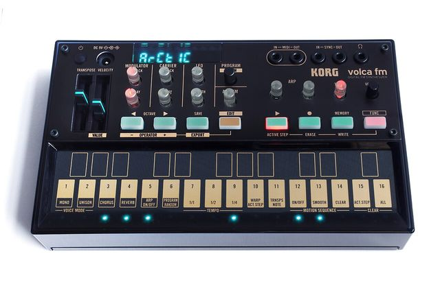

Scheda 089 · 2016 · Giappone
Korg Volca FM
Prende i suoni di un DX7 del 1983 così come sono, e va a pile
Il motore a 6 operatori del DX7 in una scatola Volca: 3 voci nel 2016, 6 nella FM2 del 2022.
Il suono vero · 0:45
Una Volca FM2 vera con i suoni di fabbrica del DX7 caricati, prima il piano elettrico E.PIANO 1 e poi le campane TUB BELLS, suonati dal vivo.
0:00 / 0:45
Registrazione di Attosaur · CC BY-SA 4.0 · Wikimedia Commons · estratto di 45 s, volume normalizzato
- USCITA
- 2016, FM2 2022
- OPERATORI
- 6
- ALGORITMI
- 32
- VOCI
- 3, poi 6
La macchinaChe cos'è
Ha le manopole trasparenti dei Volca, 2 cursori, un display che scrive il nome del suono e i tasti a sfioramento. Si accende con 6 pile stilo e suona dal suo altoparlante. Dentro però non c'è niente di analogico. La prima, nel 2016, fa 3 note per volta, e Sound On Sound scrive che è polifonica per un pelo. Nel 2022 esce la FM2, con 6 voci, un riverbero accanto al chorus e un tasto che rimescola il suono a caso. Quella che sentite è una FM2. Secondo me la prima va benissimo per bassi e campane, ma per gli accordi ci vuole la seconda.
Chi l'ha costruitaKorg e Tatsuya Takahashi
Nel gennaio 2016 Korg porta al NAMM una Volca che non ha ancora annunciato. Le Volca esistono dal 2013, quando escono Keys, Bass e Beats, e questa fa FM, con la sigla scritta nel nome. Diventa ufficiale il 10 marzo, e a presentarla nel video di Korg c'è Tatsuya Takahashi, il capo ingegnere dei Volca, quello della scheda del Volca Keys. Peter Kirn di CDM lo chiama il suo progettista. Takahashi lascia il posto nel 2017. Chi abbia firmato la FM2 del 2022 non sono riuscito a scoprirlo, e Korg nella pagina del prodotto non fa nomi.
Come funzionaCosa c'è dentro
Ogni operatore è un'onda sinusoidale con il suo inviluppo. L'algoritmo decide chi suona e chi modula gli altri, e i modi di collegare i 6 operatori sono 32. Dove suonano tutti, si sommano come i registri di un organo. Dove uno solo suona e gli altri lo modulano, escono armoniche che non si prevedono. Sul DX7 si programmava coi tasti e i menu, senza manopole. Qui l'algoritmo ha una manopola sua, e MODULATOR e CARRIER muovono insieme gli inviluppi di tutti i modulanti o di tutti i portanti. Provate a girare l'algoritmo tenendo una nota.
Chi l'ha usataNei dischi
L'aneddotoUna storia
Giugno 2016. Paul Nagle prova la Volca FM per Sound On Sound e vuole salvare i suoni che ha fatto. L'uscita MIDI non c'è. L'unica strada è la presa SYNC OUT, pensata per copiare tutto in una seconda Volca FM attaccata col cavetto. Nagle una seconda non ce l'ha, quindi registra quello che esce dalla presa come se fosse audio. Scrive che gli tornano in mente lo Spectrum e le cassette che fischiano, e che almeno è più divertente che aspettare il caricamento di un videogioco. Nella FM2 del 2022 le prese MIDI sono due, una per entrare e una per uscire.
Avvertenze
Sulla prima Volca FM la dinamica è il cursore VELOCITY, uguale per tutte le note. Per suonare piano e forte serve la FM2 e una tastiera MIDI.
Il carosello · si aprono in grande
Le 6 tavole
Da dove viene
Fonti
- «Korg Volca FM», Paul Nagle — Sound On Sound, giugno 2016 verificata il 2026-11-13
- Korg, pagina della volca fm verificata il 2026-11-13
- Korg, pagina della volca fm2 verificata il 2026-11-13
- «Korg Volca FM2 review», Si Truss — MusicRadar, 22/09/2022 verificata il 2026-11-13
- «Korg Volca FM: 2nd-gen comes with 6 voices, MIDI Out», Lyubomir Dobrev — Gearnews, 14/04/2022 verificata il 2026-11-13
- «KORG volca FM is here», Peter Kirn — CDM, 10/03/2016 verificata il 2026-11-13
- «Korg engineer tells you what you need to know about the Volca FM» — MusicRadar, 19/04/2016 verificata il 2026-11-13
- Synthtopia, Volca FM al NAMM e video di Takahashi, 2016 verificata il 2026-11-13
- «Korg Volca» — Wikipedia (EN) verificata il 2026-11-13
- «Yamaha DX7» — Wikipedia (EN) verificata il 2026-11-13
Foto: Multicherry · CC BY-SA 4.0 · Wikimedia Commons
Foto nelle tavole: Ashley Pomeroy · CC BY-SA 4.0 · Wikimedia Commons
Foto nelle tavole: Multicherry · CC BY-SA 4.0 · Wikimedia Commons
Suono: Registrazione di Attosaur · CC BY-SA 4.0 · Wikimedia Commons · estratto di 45 s, volume normalizzato